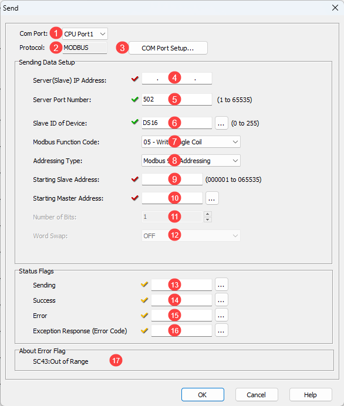
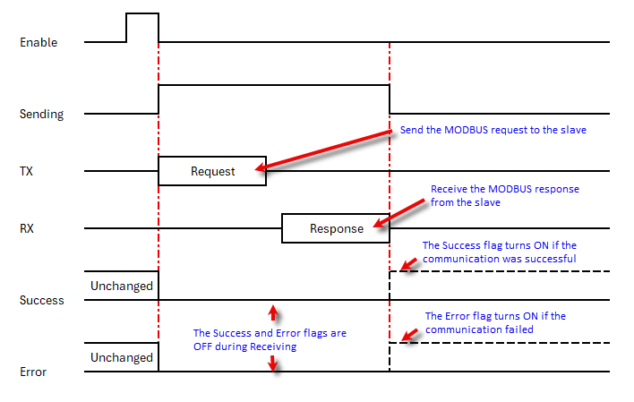
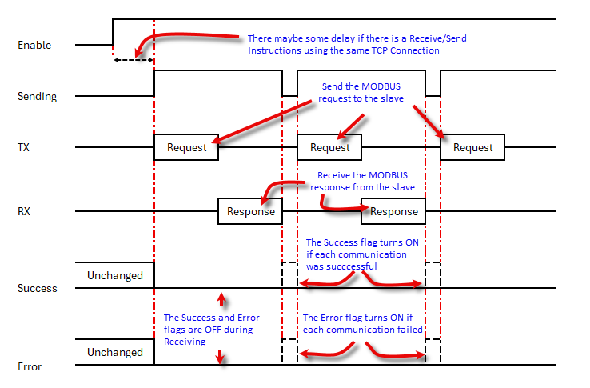

Topic: CL214

| Send Instruction: MODBUS TCP |
Topic: CL214
|
The Send instruction allows you to use Com Port 1 (Ethernet), 2 or 3 (if available) on the CLICK CPU modules as a network master and write data to external devices. The CLICK CPU modules support the MODBUS RTU, MODBUS TCP and ASCII protocols. This help topic covers the MODBUS TCP protocol. Please refer to the help topic Send Instruction: MODBUS RTU for the MODBUS RTU protocol or Send Instruction: ASCII for the ASCII protocol.
If you use Com Port 1 (Ethernet) on the CLICK CPU modules as a MODBUS TCP server (slave), you don’t need to use this instruction.
|
|
If you need more detailed information about the MODBUS protocol, we recommend to visit the following web site: www.MODBUS.org |
|

1 COM Port: Select Port 1 to use the Ethernet port.
2 Protocol:COM Port 1 only supports the MODBUS TCP protocol.
3 COM Port Setup: Click on this button to open the Com Port Setup window.
4 Server (Slave) IP Address: Enter the IP Address of the target server.
5 Server Port Number: Enter the Port Number of the target server. ‘502’ is the default.
6 Slave ID of Serial Device: Typically used for Modbus TCP to Modbus RTU gateways but some server devices may require a certain value. This value may be either a number or a DS Address.
7 MODBUS
Function Code: Select one of the following MODBUS
function codes: 01
– Read Coil Status
01
– Read Coil Status 02 – Read Input Status
02 – Read Input Status 03 – Read Holding Registers
03 – Read Holding Registers 04 – Read Input Registers
04 – Read Input Registers
8 Addressing Type: Select one of the following MODBUS Addressing Types:
|
Addressing Type |
Explanation |
|
MODBUS 984 Addressing |
This Addressing is patterned after the Modicon PLC Addressing, which many devices support. 0***** are Coils (Read/Write) 4***** are Holding Registers (Read/Write) |
|
MODBUS Hex Addressing |
This Addressing is patterned after what the MODBUS protocol actually requests, which is simply a Function Code + an Offset. |
|
CLICK Addressing |
If the MODBUS Slave is the CLICK PLC, we recommend to use this CLICK Addressing because you can use the Address Picker to select the Starting Slave Address. |
9 Starting
Slave Address: Enter the Slave
Address to start writing data to. Here are the
valid Slave addresses.
If you selected the CLICK
Addressing, you can use the Address
Picker by clicking the  icon.
icon.
|
MODBUS Addressing |
Function Code |
|||
|
05 |
06 |
15 |
16 |
|
|
MODBUS 984 |
1 to 65535 |
400001 to 465535 |
1 to 65535 |
400001 to 465535 |
|
MODBUS Hex |
0h to FFFEh |
0h to FFFEh |
0h to FFFEh |
0h to FFFEh |
|
CLICK |
Y and C |
CTD, DS, DH, SD, TD, YD & TXT |
Y and C |
CTD, DS, DD, DH, DF, SD, TD & TXT |
10 Starting Master Address:
Enter the Starting Memory
Address of the Master
CLICK CPU module to write the data to the MODBUS
Slave(s). You can use the Address
Picker by clicking the  icon.
icon.
|
Function Code |
|||
|
05 |
06 |
15 |
16 |
|
X, Y, C, T, CT and SC |
CTD, DS, DH, XD, YD, TD, SD and TXT |
X, Y, C, T, CT and SC |
CTD, DS, DH, XD, YD, SD, SD and TXT |
11 Number of Bits: Enter the size of the data to write to the MODBUS Slave(s).
12 Word Swap: When the Starting Master Address is a DD, DF or CTD Memory Address, this option is available. These Memory Addresses have 32 bit data length (2 Words), so each Address has data that can be written to two registers in the MODBUS Slave. You can Swap the order of those two word data in the DD, DF or CTD Memory Addresses to write to the Slave.
13 Sending: Assign a C bit as the Sending Flag. This C bit turns ON when the Com Port is Sending a write request to the MODBUS Slave(s) with this instruction. Please refer to the Timing Chartshown below.
|
|
Note: This Sending Flag is OFF when a Receive is reading data from a MODBUS Slave or another Send instruction is writing data to a MODBUS Slave(s). |
14 Success: Assign a C bit as the Success Flag. This C bit turns ON after the Com Port wrote data to the MODBUS Slave(s) successfully. It stays ON until this instruction is re-enabled. Please refer to the Timing Chartshown below.
|
|
Note: In the Broadcast Mode (Slave ID = 0), there is no response from the MODBUS Slaves. The Success bit turns ON automatically after the CLICK PLC executed the Send instruction. |
15 Error: Assign a C bit as the Error Flag. This C bit turns ON after the Com Port could not write data to the MODBUS slave(s) successfully. It stays ON until this instruction is re-enabled. Please refer to the Timing Chart shown below.
16 Exception Response (Error Code): Assign a DS or DD Memory Address to store the Exception Response from the MODBUS Slave.
|
|
Note: Each MODBUS Slave supports a different set of the Exception Response. Please refer to the user manual/specifications of each MODBUS Slave. If you are using a CLICK PLC as a MODBUS Slave, please refer to this topic for the Exception Response that the CLICK PLC supports. |

